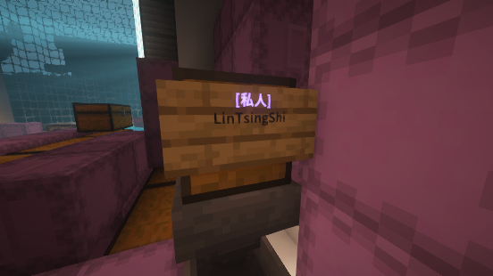

Loading header...
锁箱插件
锁箱插件为玩家的物品安全提供了再一重保障。

用插件锁定的箱子
指令一览
无
功能介绍
锁箱插件只允许列出的玩家操作箱子、潜影盒、熔炉、工作台等物品。
使用一个告示牌，可以为自己在内的最多3个玩家分配操作权限。如果有两个告示牌，红石元件也获得操作权限，但红石元件也需要用两个告示牌赋予红石操作权限。
管理员不受该插件限制，当然，管理员没必要拿走你的东西。
目录